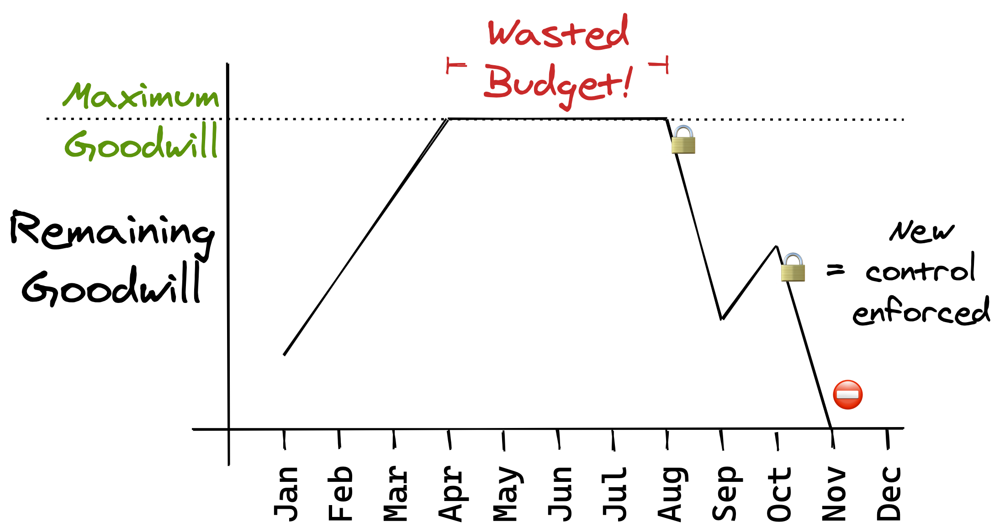

Making users more secure generally means annoying them. Whether it’s making them carry a hardware security key or just enforcing a short screensaver timeout, changing how people go about their work is annoying—and an annoyed user is not a secure user.
The effectiveness of a lot of security controls relies on the user cooperating. If they get frustrated with all the barriers and friction between them and doing their actual job, they might just find ways around the controls—their shortened screensaver timeout is soon “fixed” with a keep-awake app and now they’re less secure than they were before.
Although there’s a never-ending stream of new controls security teams want to build, enforcing them without enough goodwill from the user can end up worsening security.
But, letting users dictate what security controls they’ll accept isn’t a solution. So how does a security team tread the fine line of deploying enough controls to secure a system without infuriating its users?
Thinking in terms of budgets
Security teams want to enforce lots of new controls but find that the faster they do, the more users get annoyed.
Likewise, product teams want to release lots of new features but find that the faster they do, the more often the product breaks.
Fortunately for the product team, measuring uptime makes it easy to quantify how often they break the product. If their product is supposed to have 99.9% uptime—perhaps promised to customers as a Service Level Agreement (SLA)—the team can meet this commitment as long as the product is broken for less than 43 minutes per month. After an outage, the team can work out how much time they have remaining, and so decide how careful they need to be for the rest of the month—perhaps deciding to delay the release of that new, ambitious feature.
But, the 43 minutes aren’t just a countdown till contract-breach, they make up an “error budget”1 the team can spend tactically. Sometimes the team intentionally cause downtime. For example, rather than attempting a complex, no-downtime database upgrade, they might instead choose to just take the system down for 15 minutes and take a simpler upgrade path. They get to avoid some tricky engineering work but, in exchange, it costs them some of their error budget.
Of course, the team aren’t always so fortunate—some months, a single unforeseen outage can use up their entire error budget. Until the budget is replenished, the team have to be extra careful to avoid any more downtime. They don’t have the luxury of using their budget for any non-essentials.
The security goodwill budget
Although it’s impossible to measure how much “security goodwill” a user has remaining, luckily it otherwise behaves very similarly to the product team’s error budget. Exceeding the user’s goodwill won’t directly cost you money like breaching an SLA does, but your security culture will take a big hit.
Thankfully, as humans we’re very adaptable and so the security control that today infuriates a user, next week only annoys them and is soon just the way things work. Just like a lottery winner eventually returns to their original level of happiness2, a user’s goodwill gradually restores itself.
Spending your budget wisely

So why use a budget to think about this tradeoff between enforcing new controls and infuriating users? Because thinking about security goodwill as a budget lets you easily apply what you already know about managing budgets.
1: Don’t exceed your budget
Just because you’ve thought up a cool new security control, doesn’t mean you should enforce it straight away. First, you should work out if you’ve got enough budget remaining.
How annoying is this new control? How much goodwill is it going to cost?
Which users is this going to annoy? How much goodwill do they have left?
Delaying the new control might be painful but you’ll get better results by waiting than if you charged ahead without thinking about your users.
If you’ve got a longer-term roadmap with a bunch of new controls, you can spread them throughout the year so that there’s some time between each for goodwill to recover.
2: Don’t waste your budget
A user’s goodwill doesn’t increase forever. Eventually, the user reaches a steady-state and leaving them alone doesn’t increase their goodwill any further—you can’t leave them for an entire year and expect them to be happy when they’re suddenly saddled with twelve month’s worth of security controls at once.
Instead, it’d have been much better enforcing controls gradually throughout the entire year, leaving enough time between each for their security goodwill to recharge.
If you follow an Agile development process then you’re already used to breaking up a big change into a series of smaller changes. Making sure you’re also breaking up the impact on users is essential for making good use of your budget.
3: Save some budget for a rainy day
Your security goodwill budget isn’t something you can spend frivolously. Sometimes you really will have no choice but to annoy everyone with a reboot for an emergency update—and you’d better make sure you’ve kept enough budget spare.
To help reserve some budget, it’s useful to not only plan when to implement new security controls but also how. Generally, a preventative control (preventing bad things from happening) is going to be more annoying and use more of your goodwill budget than a detective control would (detecting if bad things happen). A detective control, while not as effective as a preventative control, has the advantage that it can often be made invisible to users.
When running low on annoyance budget, a detective control can be a useful stopgap measure until you’ve got enough budget for the full preventative control.
4: Find ways to stretch your budget
No matter how well you plan your security goodwill budget, it might still be the bottleneck limiting how much your team can do. If this was an engineering capacity issue, you could just go get more headcount approved. Unfortunately, there’s nothing that simple to grow your security goodwill budget.
However, even when you need a costly preventative control and can’t substitute a detective one, you can still try to minimise the goodwill cost. A simple path to lower-cost controls is making sure users understand why their work is being interrupted. The interruption is much less frustrating if the user understands what the security control is protecting them against.
By lowering the goodwill cost of each control, you can squeeze more of them into your budget.
Security culture vs. security goodwill
Security culture is a whole lot more complicated than just staying within your goodwill budget. Even a perfectly managed goodwill budget only gets you users that are not annoyed at the security team. There’s much more to a good security culture than that.
Rather, having a well-managed security goodwill budget is one of the necessary foundations that makes a great security culture possible.
-
https://sre.google/sre-book/embracing-risk/#xref_risk-management_unreliability-budgets ↩︎
-
↩︎The hedonic treadmill, also known as hedonic adaptation, is the observed tendency of humans to quickly return to a relatively stable level of happiness despite major positive or negative events or life changes. https://wikipedia.org/wiki/Hedonic_treadmill